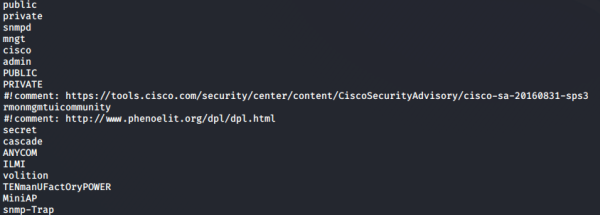

snmp-brute
We can run the Nmap snmp-brute script to find the Community String(Name) of a
machine running SNMP service
sudo nmap -sU -p 161 <ip_address> --script snmp-brute
the default wordlist used by Nmap is stored here /usr/share/nmap/nselib/data/snmpcommunities.lst
Since the default community string
wordlist as we can see is quite small, Nmap offers the ability to use a custom wordlist by adding following
option:
--script-args snmp-brute.communitiesdb=<wordlist>Seclists(
https://github.com/danielmiessler/SecLists) has various
wordlist
apt install seclists
ls /usr/share/seclists/Discovery/SNMP #SNMP wordlist
example:
nmap -sU -p161 <IP-address> --script snmp-brute --script-args snmp-brute.communitiesdb=/usr/share/seclists/Discovery/SNMP/common-snmp-community-strings.txt